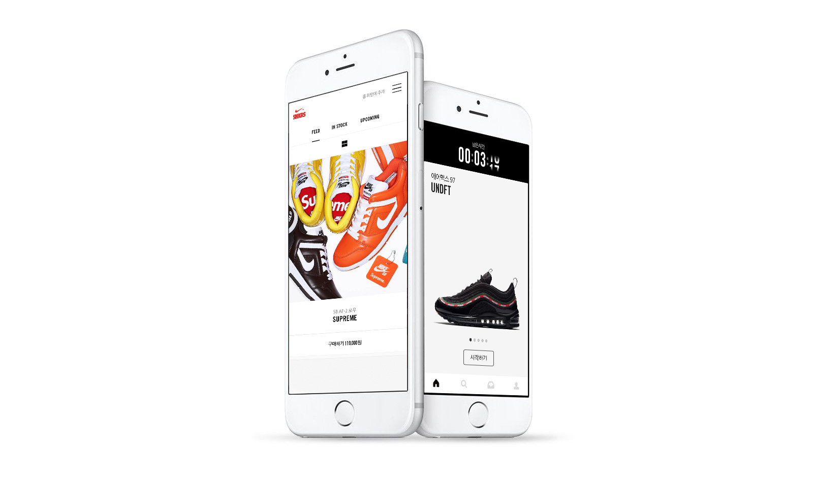
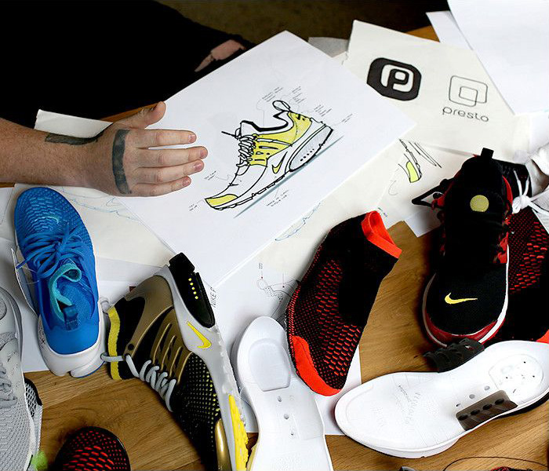
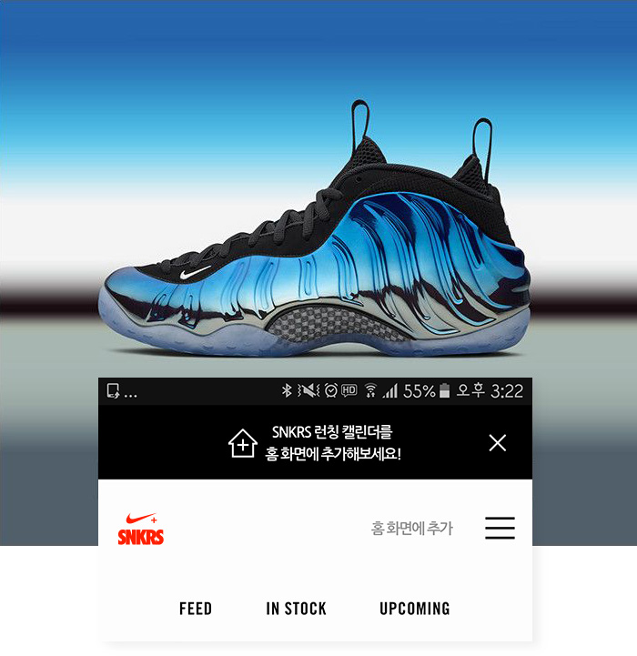
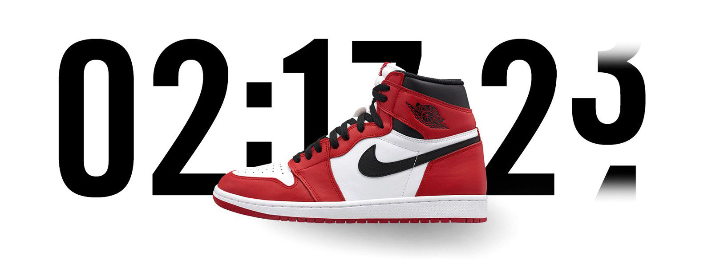

최고의 스니커즈를 만나보세요.
아이코닉한 클래식부터 최신 제품에 이르기까지, 나이키 SNKRS 런칭캘린더에서
런칭 스케줄, 신상품, 다양한 스니커즈의 비하인드 스토리를 제공합니다.


스니커즈를 완성하는데 영향을 준 영감, 제품 특징과
헤리티지를 가장 먼저 만나보세요.
SNKRS 런칭캘린더를 모바일 홈화면에 추가해 보세요.
한번의 탭으로 언제 어디서나 쉽게 최신 런칭 제품과
제품 비하인드 스토리를 만나보실 수 있습니다.


가장 핫한 제품에 한해서 진행되는 더 드로우.
온라인 추첨을 통해 누구나 공정하게
제품을 구매할 수 있는 기회를 드립니다.